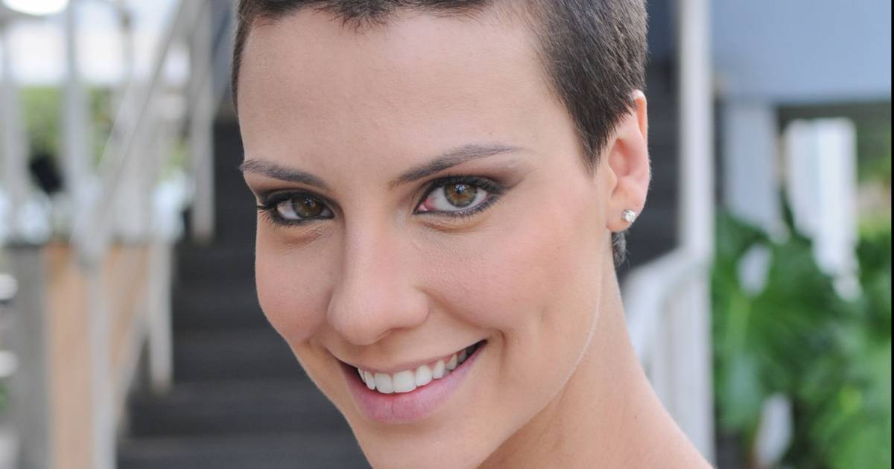
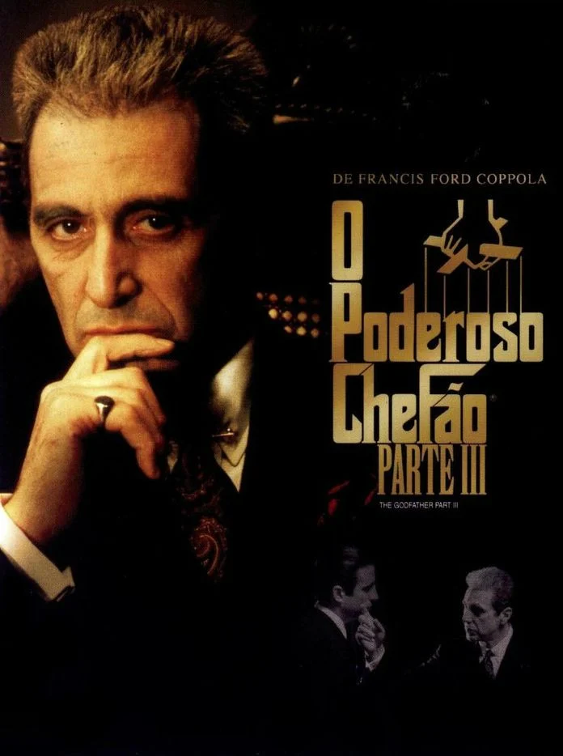

📋 Seleção do Dia
As notícias mais quentes do entretenimento brasileiro · 12 de junho de 2026 · Ir para BuzzPop
Crédito: Imagem ilustrativa: ingresso.com
O novo longa do diretor Steven Spielberg, Dia D, estreia nos cinemas brasileiros e promete misturar ficção científica com drama familiar. Saiba onde assistir e o que esperar.
Fonte: Referencias consultadas: Séries em Cena, Folha de S.Paulo, G1, AdoroCinema, Omelete. Publicacao original
Crédito da imagem: Imagem ilustrativa: ingresso.com
Origem da imagem: Imagem ilustrativa escolhida fora das fontes que cobrem a noticia.
Atriz e dançarina que serviu de modelo para a fada Sininho em 'Peter Pan' morre aos 97 anos.
Fonte: Referencias consultadas: Folha de S.Paulo, O Globo, Omelete, obusilis.com.br, AdoroCinema. Publicacao original
Crédito da imagem: Imagem ilustrativa: starnewsonline.com
Origem da imagem: Imagem ilustrativa escolhida fora das fontes que cobrem a noticia.
Crédito: Imagem ilustrativa: msn.com
A Globo registrou a maior audiência no primeiro jogo da Copa do Mundo, superando SBT e CazéTV. Record também se destacou com programação alternativa.
Fonte: Referencias consultadas: Notícias da TV, VEJA, O Dia, R7 Entretenimento, Máquina do Esporte. Publicacao original
Crédito da imagem: Imagem ilustrativa: msn.com
Origem da imagem: Imagem ilustrativa escolhida fora das fontes que cobrem a noticia.

Crédito: REPRODUÇÃO/DISNEY+
A sétima eliminada de Casa do Patrão foi definida na noite desta quinta-feira.
Fonte: Referencias consultadas: R7, O Globo, Estadão, CNN Brasil, NSC Total. Publicacao original
Crédito da imagem: REPRODUÇÃO/DISNEY+
Origem da imagem: Imagem ilustrativa escolhida fora das fontes que cobrem a noticia.
Crédito: Foto: Tati Machado e Lexa – Reprodução/ Instagram
Após perder um bebê em 2024, Tati Machado anuncia que está grávida novamente e recebe homenagem emocionante da amiga Lexa.
Fonte: Referencias consultadas: O Globo, UOL, Midiamax, Diário Gaúcho, band.com.br. Publicacao original
Crédito da imagem: Foto: Tati Machado e Lexa – Reprodução/ Instagram
Origem da imagem: Imagem ilustrativa escolhida fora das fontes que cobrem a noticia.

Crédito: Foto: Copyright © 2008 - 2026 Webedia - Todos os direitos reservados
Atriz revela bastidores dolorosos do fim do relacionamento com o ator, incluindo dívidas e falta de apoio.
Fonte: Referencias consultadas: UOL, Globo, R7 Entretenimento, band.com.br, VEJA. Publicacao original
Crédito da imagem: Foto: Copyright © 2008 - 2026 Webedia - Todos os direitos reservados
Origem da imagem: Imagem ilustrativa escolhida fora das fontes que cobrem a noticia.
Artista britânico conhecido por suas piscinas californianas e paisagens marcantes faleceu. Ele deixa um legado de inovação e mais de seis décadas de produção.
Fonte: Referencias consultadas: CNN Brasil, Folha de S.Paulo, Estadão, G1, CartaCapital. Publicacao original
Crédito da imagem: Imagem ilustrativa: pt.artsdot.com
Origem da imagem: Imagem ilustrativa escolhida fora das fontes que cobrem a noticia.

Crédito: Imagem ilustrativa: br.freepik.com
Levantamento de veículos nacionais mostra que a confiança é o maior trunfo nos relacionamentos atuais, mas também pode ser o motivo principal de rupturas.
Fonte: Referencias consultadas: O Globo, Folha de S.Paulo, G1, O POVO, A Crítica. Publicacao original
Crédito da imagem: Imagem ilustrativa: br.freepik.com
Origem da imagem: Imagem ilustrativa escolhida fora das fontes que cobrem a noticia.

Crédito: Foto: © 1996 - 2025 | SEMPRE EDITORA
Cantora brasileira se apresenta na cerimônia de abertura do Mundial no Canadá. Saiba horário e local do show.
Fonte: Referencias consultadas: Forbes Brasil, G1, Folha de S.Paulo, GZH. Publicacao original
Crédito da imagem: Foto: © 1996 - 2025 | SEMPRE EDITORA
Origem da imagem: Imagem ilustrativa escolhida fora das fontes que cobrem a noticia.
Crédito: Foto: Marcela Canéro/Divulgação / Elas no Tapete Vermelho" width="112" height="116">
Influenciadora desembarca nos EUA para cobrir o Mundial, mas primeiro dia é marcado por ostentação, erro ao vivo e críticas sobre racismo.
Fonte: Referencias consultadas: CNN Brasil, UOL, Globo, VEJA, Observatório da Imprensa. Publicacao original
Crédito da imagem: Foto: Marcela Canéro/Divulgação / Elas no Tapete Vermelho" width="112" height="116">
Origem da imagem: Imagem ilustrativa escolhida fora das fontes que cobrem a noticia.

Crédito: Foto: O ator João Victor Gonçalves — Foto: Divulgação
João Victor Gonçalves, intérprete de Mau Mau, reflete sobre acolhimento familiar e bastidores com Tony Ramos.
Fonte: Referencias consultadas: Notícias da TV, Gshow, Terra, purepeople.com.br, Diario de Cuiabá. Publicacao original
Crédito da imagem: Foto: O ator João Victor Gonçalves — Foto: Divulgação
Origem da imagem: Imagem ilustrativa escolhida fora das fontes que cobrem a noticia.
Crédito: Imagem ilustrativa: artstation.com
A Marvel divulgou a primeira sinopse oficial do novo filme dos Vingadores, que traz Doutor Destino como protagonista. A história promete reviravoltas e a introdução de um poderoso personagem mágico.
Fonte: Referencias consultadas: Omelete, einerd.com, CinePOP Cinema, games.gg, Cabana do Leitor. Publicacao original
Crédito da imagem: Imagem ilustrativa: artstation.com
Origem da imagem: Imagem ilustrativa escolhida fora das fontes que cobrem a noticia.

Crédito: Imagem ilustrativa: adorocinema.com
Anthony Guidera, conhecido por papéis em ‘O Poderoso Chefão: Parte III’ e ‘Armageddon’, faleceu aos 65 anos. A causa da morte não foi divulgada.
Fonte: Referencias consultadas: Omelete, Folha de S.Paulo, Estadão, CinePOP Cinema, Vietnam.vn. Publicacao original
Crédito da imagem: Imagem ilustrativa: adorocinema.com
Origem da imagem: Imagem ilustrativa escolhida fora das fontes que cobrem a noticia.

Crédito: foto/" />
Clara, de um ano e cinco meses, foi submetida a um procedimento médico após a descoberta de um nódulo facial. A mãe, emocionada, compartilhou detalhes nas redes sociais.
Fonte: Referencias consultadas: O Globo, CNN Brasil, Estadão, OFuxico, R7 Entretenimento. Publicacao original
Crédito da imagem: foto/" />
Origem da imagem: Imagem ilustrativa escolhida fora das fontes que cobrem a noticia.

Crédito: Imagem ilustrativa: br.freepik.com
Estabelecimentos da capital sul-mato-grossense reforçam equipes e esperam aumento no faturamento para a data comemorativa.
Fonte: Referencias consultadas: Campo Grande News, Folha de S.Paulo, GZH, Forbes Brasil, Estado de Minas. Publicacao original
Crédito da imagem: Imagem ilustrativa: br.freepik.com
Origem da imagem: Imagem ilustrativa escolhida fora das fontes que cobrem a noticia.
Crédito: Foto: Divulgação
Cantor revela diagnóstico de infecção fúngica na garganta e explica como está se recuperando para voltar aos palcos.
Fonte: Referencias consultadas: O Globo, VEJA, OFuxico, Revista Fórum, Observatório dos Famosos. Publicacao original
Crédito da imagem: Foto: Divulgação
Origem da imagem: Imagem ilustrativa escolhida fora das fontes que cobrem a noticia.
Cinco casais de famosos quebraram a discrição habitual e publicaram mensagens românticas no Dia dos Namorados. Veja quem são.
Fonte: Referencias consultadas: Globo, VEJA, Estrelando, O Dia, Rádio Itatiaia. Publicacao original
Crédito da imagem: Foto: Sabrina Sato e NIcolas Prattes Foto: Reprodução/Instagram
Origem da imagem: Imagem ilustrativa escolhida fora das fontes que cobrem a noticia.
Crédito: Foto: card,.icon-paypal,.icon-social-tumblr,.icon-social-twitter,.icon-social-facebook,.icon-social-instagram,.icon-social-linkedin,.icon-social-pinterest,.icon-social-github,.ico
Cantora nega ter traído Gustavo Mioto com Zé Felipe e anuncia medidas judiciais contra o jornalista.
Fonte: Referencias consultadas: Jornal Correio, Notícias da TV, Midiamax, Rádio Itatiaia, Pipoca Moderna. Publicacao original
Crédito da imagem: Foto: card,.icon-paypal,.icon-social-tumblr,.icon-social-twitter,.icon-social-facebook,.icon-social-instagram,.icon-social-linkedin,.icon-social-pinterest,.icon-social-github,.ico
Origem da imagem: Imagem ilustrativa escolhida fora das fontes que cobrem a noticia.

Crédito: Foto: Novela 'Quem ama cuida': Tilde (Luana Martau), Marcão (Claudio Andrade), Rosa (Tatiana Tiburcio), Arthur (Antonio Fagundes), Edvaldo (Guilherme Piva) e Diná (Rosi Campos) — Foto: M
Nos bastidores da Globo, conversas indicam que a novela Quem Ama Cuida terá mudanças significativas na segunda fase, incluindo a chegada de um novo galã e uma guinada na vida financeira de Adriana.
Fonte: Referencias consultadas: Hugo Gloss, Notícias da TV, CNN Brasil, Observatório da TV, RD1. Publicacao original
Crédito da imagem: Foto: Novela 'Quem ama cuida': Tilde (Luana Martau), Marcão (Claudio Andrade), Rosa (Tatiana Tiburcio), Arthur (Antonio Fagundes), Edvaldo (Guilherme Piva) e Diná (Rosi Campos) — Foto: M
Origem da imagem: Imagem ilustrativa escolhida fora das fontes que cobrem a noticia.
Crédito: Imagem ilustrativa: hedflow.com
Esposa do fundador do Sepultura explica em entrevista o que causou a mudança no visual do músico, que impressionou fãs nas redes sociais.
Fonte: Referencias consultadas: Igor Miranda, UOL, Globo, R7 Entretenimento, Tenho Mais Discos Que Amigos. Publicacao original
Crédito da imagem: Imagem ilustrativa: hedflow.com
Origem da imagem: Imagem ilustrativa escolhida fora das fontes que cobrem a noticia.